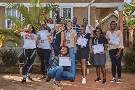
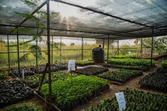
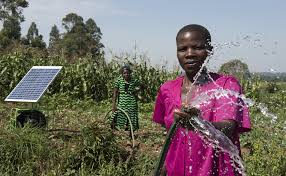
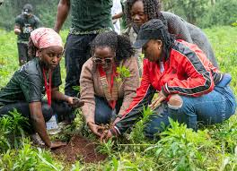
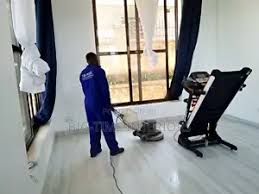
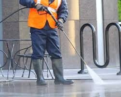
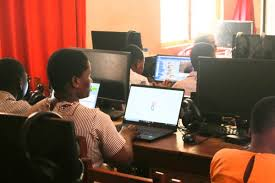
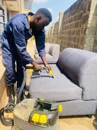
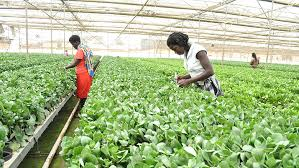
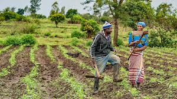

The Digital Seed Dashboard
Participants
1,240
Active learners
Mentors
85
Experienced volunteers
Projects
312
Community initiatives
Trees Planted
18,400
Since program start
Mission
To empower and inspire African youth through mentorship, digital skills training, environmental stewardship, and sustainable agricultural practices — fostering resilient communities and creating pathways for a brighter, sustainable future.
Our Four Pillars
The pillars of our work focus program design, capacity building and practical outcomes for youth and communities.


Environmental Stewardship
Community tree planting, air-quality initiatives and stewardship projects.
Learn More
Sustainable Agriculture
Training in regenerative farming, food security and livelihood support.
Learn MoreHow We Work
We combine mentorship, hands-on training and community-led environmental action. Our approach centers youth leadership, local partnerships, and practical outcomes.
Mentorship & Coaching
One-to-one mentoring, career guidance and leadership development to help young people take the next step.
Skills & Tech
Practical digital skills workshops and project-based learning to build portfolios and employability.
Environment & Farming
Community tree-planting, regenerative agriculture training and green enterprise support for livelihoods.
Featured Programs

Mentorship
Structured pairing and leadership training for youth.
Digi Girls
Digital skills, internships and mentorship for girls.

Tree Planting
Local reforestation and stewardship projects.

Sustainable Agriculture
Training for resilient smallholder farming.
Our Mission & Why
We empower African youth to become leaders, technologists and stewards of the land — creating resilient communities through mentorship, digital training and sustainable practice.


The Voices — Success Stories
Short videos, quotes from participants and before/after photos showing the impact of our programs.

From seedling to small enterprise
Digi Girls: Learner quote

Before: planting site
After: restored site
Multimedia: Youth storytelling

Watch: 30s success story
Gallery: Stories of Empowerment & Sustainability
Images and short videos showcasing our mission to empower youth, protect the environment, and build resilient communities through mentorship, digital skills, and sustainable practices.




The Knowledge Roots — FAQs
Questions from Youth and Partners. Click a question to reveal the answer.
For Youth
Apply via the Digi Girls program page — we run seasonal cohorts and accept learners based on the application and interest. Contact us via the application link or email for rolling enquiries.
Core mentorship pairings and group workshops are offered free. Some advanced workshops may ask for a small materials fee.
Yes — we welcome skilled volunteers. Please include your CV and interests when you contact us; local coordinator details are on the Contact page.
For Partners
Donations support training materials, stipends, tree seedlings, and local coordination. We publish annual reports and can provide program-specific budgets for partners.
Yes — we are registered locally and comply with reporting standards. Contact us for registration documents and partnership terms.
We focus on community-led planting and monitoring. We provide training on seedling care and local stewardship to ensure long-term survival.
Get Involved
Interested in partnering, volunteering, or supporting our work? Reach out and let's build hope together.
Volunteer
Mentors, trainers and field volunteers — lend your skills and time.
Sign UpPartner
Corporate sponsors and organizations — collaborate on scalable projects.
Get in TouchDonate
Support youth programs and community initiatives with a one-time or recurring gift.
Donate